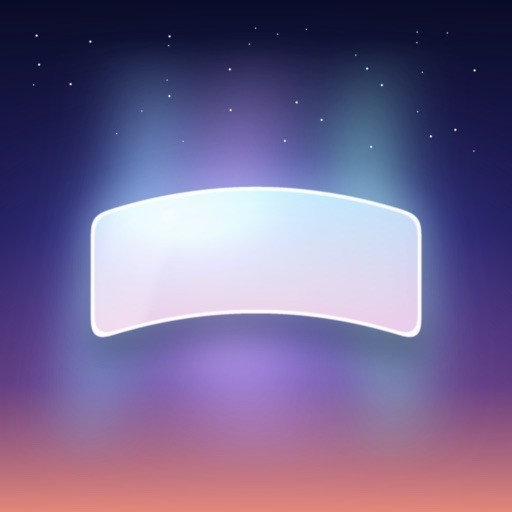
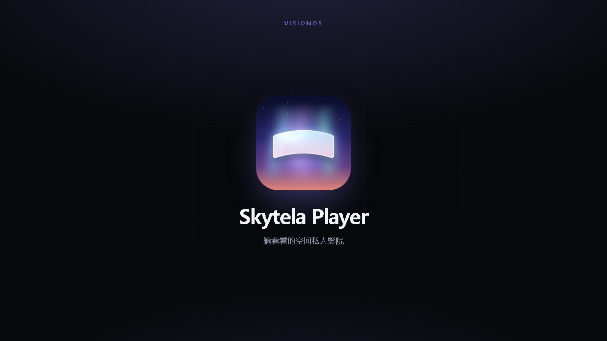

Skytela Player
躺着看的空间私人影院，全格式解码
已发布visionOSv5.0
介绍
给 Apple Vision Pro 做的空间视频播放器。屏幕可以放到墙上、半空、或者头顶，然后躺下看。 窗口、沉浸、影院三种模式随时切换；曲率 0° 到 180° 自由调节，让画面包住视野，边缘不变形。环境可以无级调暗到全黑，暂停时自动把环境提亮。 解码是重点：MKV、RMVB、AVI、FLV、WMV、TS、WebM、MP4、MOV、HLS 都能直接打开，视频支持 HEVC、H.264、VP9、ProRes、MPEG-2、VC-1，音频支持 DTS、TrueHD、FLAC、Opus、APE。字幕自动识别 GB18030 / Big5 编码，支持 SRT、ASS、SSA、VTT。Enhanced 3D 能把普通 2D 影片实时转成立体画面。 还内置完整文件管理器：SMB 直连电脑共享文件夹、NAS 浏览、解压、文本编辑器改字幕、缩略图缓存。外加音乐播放和全景照片浏览。
功能
- 窗口 / 沉浸 / 影院三种模式，曲率 0°–180° 可调
- MKV / RMVB / AVI / FLV / WMV / TS / WebM / HLS 直接打开
- DTS、TrueHD、FLAC、APE 音频，HEVC / ProRes / VP9 视频
- 字幕自动识别 GB18030 / Big5，支持 SRT / ASS / SSA / VTT
- Enhanced 3D 把 2D 影片实时转成立体画面
- 内置文件管理器，SMB 连电脑、NAS 浏览、解压、改字幕
截图
